操作系统 Operating System Concepts¶
约 9381 个字 174 行代码 预计阅读时间 33 分钟
[!NOTE]
LAB 0-7（5+15+15+15+20+20+10+10=110）
1 概述 Overview¶
1.1 操作系统功能&定义¶
从计算机角度，操作系统是个程序，管理电脑硬件
- resource allocator：分配资源（cpu、内存、I/O设备——硬件hardware 提供资源）
- control program：防止资源滥用
定义：The operating system is the one program running at all times on the computer——namely kernel 操作系统是一直运行在计算机上的程序——通常称为内核
multi-user OS: Linux ubuntu
1.2 计算机系统的运行¶
计算机= CPU + 多个设备控制器（I/O devices），通过公用总线相连，该总线提供了共享内存的访问
CPU和I/O设备可以并发执行（execute concurrently），并竞争访问内存，需要内存控制器协调访问内存
每个设备控制器 device controller
- 控制特定的设备（磁盘驱动器、音频、视频显示..）
- 有本地缓冲区（local buffer），存储I/O
- 经系统总线system bus触发中断interrupt告知CPU已完成
引导程序bootstrap program在开机power-up/reboot时加载
- 到ROM/EPROM上（Read-only Memory是firmware固件）
- 初始化系统
- bootstrap定位操作系统内核并加载到内存、开始执行
中断 interrupt¶
中断是
ISR中断服务例程interrupt service routine
中断向量interrupt vector：存储中断例程的地址 the addresses of all the service routines
- 寄存器（Interrupt architecture）储存被中断指令的地址
有中断在处理时会停止其他未到的中断 Incoming interrupts are disabled while another interrupt is being processed to prevent a lost interrupt.
trap ：软件的中断，经常由错误或用户请求（又称 系统调用system call）导致
操作系统是由中断驱动的 ** An operating system is interrupt-driven**
中断处理——一种软件例程处理
- 恢复CPU状态——存寄存器&程序计数器（program counter） - 计数器：存储下一条要执行的指令的位置
- 确定中断类型：polling by a generic routine or vectored interrupt system
两种I/O处理方式：
- 要等待，处理完传回——同步 synchronous
- 接收到（没做完）就传回——异步 asynchronous
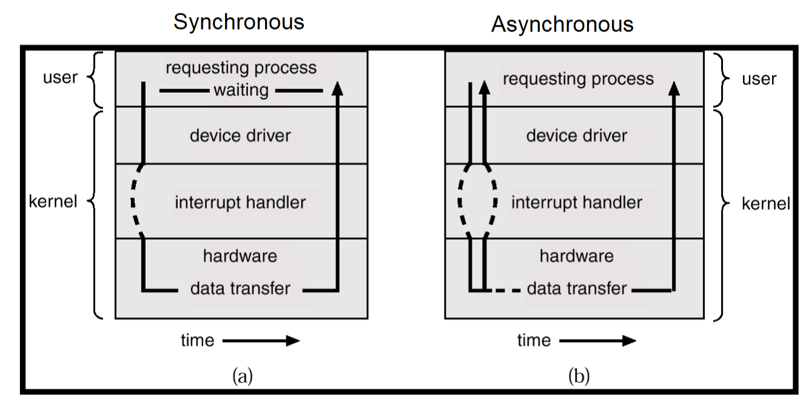
DMA：直接内存访问

每块只产生一个中断
1.3 存储¶

速度、花销、易失性
一级二级三级是按容量分的
高速缓存cache——更快的数据访问机制，主存可以认为是二级存储的最后一个cache
1.4 计算机体系结构¶
多处理器 multiprocessing
- 增加吞吐量
- 规模经济
- 增加可靠性
对称多处理器 SMP symmetric multiprocessing：所有处理器对等、没有主从关系，共享内存
多核 multicore
- 单片通信比芯片间通信快
- 多核电源消耗低
非均匀内存访问 Non-uniform memory access(NUMA architecture)
- CPU通过一个共享系统连接
- 随着处理器的增加而更有效地扩展
- 跨互连的远程内存速度较慢
- 操作系统需要仔细的 CPU 调度和内存管理
1.5 操作系统结构¶
Multiprogramming 多道程序设计 needed for efficiency (CPU utilization)
- 组织各项任务让CPU总有工作做
- 加载多项任务到内存
- 通过 job scheduling 安排选一个任务做
- 定义：在一个cpu上并发运行多个进程
Timesharing (multitasking) is logical extension in which CPU switches jobs so frequently that users can interact with each job while it is running, creating interactive computing (interactivity)
- 响应速度足够快
- 多任务（进程 process）并发在CPU上执行 -> CPU调度scheduling
- 如果一个进程不能全放入内存memory -> 换入换出swapping（将没用的进程挪出）
- 虚存virtual memory：一种技术允许CPU执行不完全在内存的进程
1.6 操作系统执行 OS operations¶
[!IMPORTANT]
Interrupt driven by hardware
Software error or request creates exception or trap
- Division by zero, request for operating system service
Other process problems include infinite loop, processes modifying each other or the operating system
双模式dual-mode 操作允许操作系统保护自身和其他系统组件
- 用户模式和内核模式 user mode & kernel mode
- 硬件提供的模式位 mode bit
- 提供区分系统何时运行用户代码或内核代码的能力
- 一些指令被指定为特权privileged，只能在内核模式下执行
- 系统调用system call将模式更改为 kernel 模式，再通过系统调用回来将其重置为 user 模式
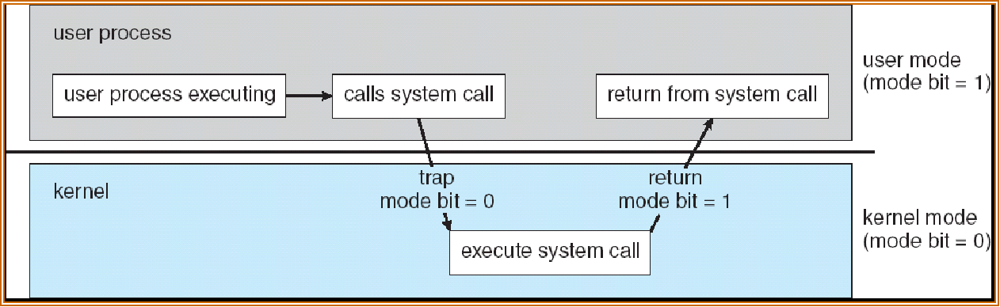
Timer定时器：防止无限循环/进程占用资源
- 在一段时间后中断进程 set interrupt
- 操作系统将计数器counter
-1，到0产生中断 - 在安排流程之前进行设置，以重新获得控制权或终止超过分配时间的程序
Process management 进程管理¶
程序是被动实体，进程是主动实体 active entity
- 需要资源去执行
- 进程终止时将资源还给操作系统
- 多线程进程Multi-threaded process 每个线程都有一个计数器
- 多路复用multiplexing->实现并发concurrency

Memory management内存管理¶

File management 文件管理¶
文件管理：创建、删除、加密

Storage management 存储管理¶
Mass-Storage Management

I/O Subsystem 子系统
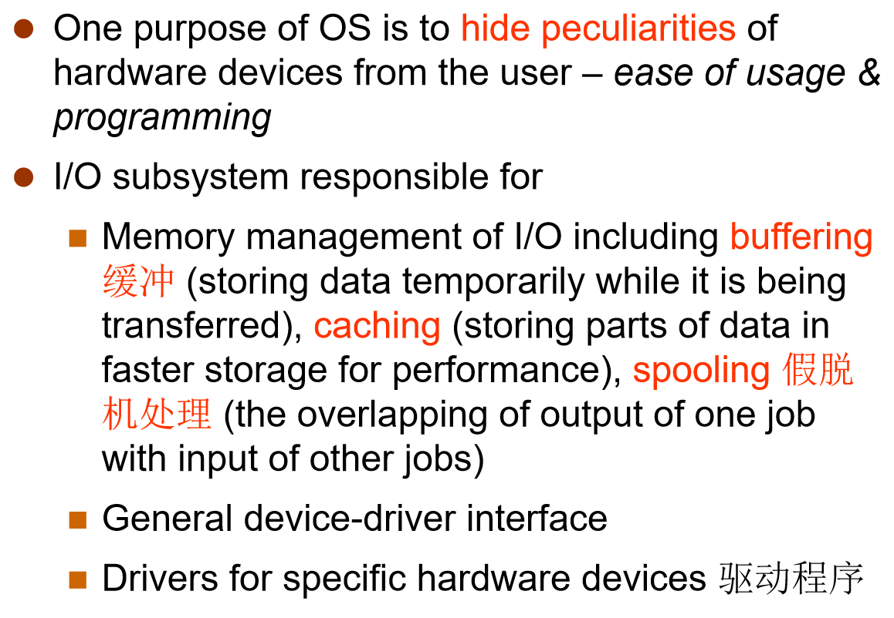
总结 OS purposes¶
- Abstraction 抽象： a way to hide complexity
- Multiplex 多路复用（空间、时间）
- Isolation 隔离（用户/核模式）
- Sharing 共享（用户、进程 资源共享->并发）
- Security 安全（特权指令
- Performance 性能
- Range of uses
2 结构 Operating-System Structures¶
2.1 操作系统服务¶
操作系统提供的服务有：
- UI(user interface)
- CLI(command line)
-
优点：对重复性工作高效
-
GUI (Graphics User Interface)
2.2 System call 系统调用¶
系统调用实现¶
API（Application program interface)：被封装过high-level的系统调用
- Mostly accessed by programs via a high-level API rather than direct system call use 主要通过高级的API接触程序而不是直接的系统调用
每个系统调用有个编号，通过系统调用表 table
系统调用发生时，程序控制权将交给内核来完成服务，服务完成后，控制权再还给程序（回到用户状态
系统调用是用户应用（软件）和硬件之间沟通的桥梁——保证了安全和有效的沟通 secure & efficient
参数传递¶
最简单：寄存器保存
间接方式：block、table、memory，把内存中buffer地址告诉寄存器（Linux & Solaris）
其他：栈stack，不一定支持多用户
- block和stack方法不限制参数的数量或长度
系统调用分类¶
Process control 进程管理 File management 文件管理 Device management 设备管理 Information maintenance (e.g. time,date)信息维护 Communications 交流 Protection 保护

2.3 系统程序¶
分类：File manipulation、Status information、File modification、Programming language support、Program loading and execution、Communications、Application programs
.....debuggers
不是系统程序：web browsers、word processors（用户程序）
2.4 os设计和实现¶
os设计和实现不是一个解决问题的过程（不是具体的问题而是创造性过程）
1.由目标和指标出发：用户目标、系统目标
2.被硬件和系统类型影响
Policy: What to do? 策略（确定具体做什么事，eg允许某些用户访问某些文件） Mechanism: How to do it? 机制（定义做事方式）
内存管理、cpu调度是机制？（算法是机制？
配置文件写的是策略（policy）
Provide mechanism rather than policy. In particular, place user interface policy in the clients' hands.
2.5 操作系统结构¶
Simple Structure¶
MS-DOS: provide the most functionality in the least space
- 不分模块，界面和多级功能间没有很好的分开
UNIX¶
UNIX – 受硬件功能限制，原始 UNIX 操作系统结构有限。UNIX 操作系统由两个可分离的部分组成
- 系统程序
- 内核
- 包括系统调用接口以下和物理硬件以上的所有内容
- 提供文件系统、CPU 调度、内存管理和其他操作系统功能；一个级别的大量功能
Monolithic System Structure 宏内核架构¶
优点：
缺点：
UNIX System Structure 宏内核

Microkernel System Structure 微内核¶
对应宏内核
将尽可能多的内容从内核移至“用户”空间，提供一小部分服务例如进程调度
用户模块之间使用消息传递进行通信 message passing
优点：
- 更易于扩展 extend 微内核
- 更易于将操作系统移植 port 到新架构（flexibility）
- 更可靠（内核模式下运行的代码更少
- 更安全
缺点：
- 用户空间与内核空间通信的性能开销performance低（宏内核更高效）
- 系统服务、驱动程序的复杂性
- 上下文切换不太有效
Hybrid Structure——Darwin¶
混合模式：By ??
Windows, MacOS, iOS——混合内核
Layered Approach 分层方法¶
操作系统分为多个层（级别），每层都建立在较低层之上。最底层（第0层）是硬件；最高层（第N层）是用户界面。 通过模块化 modularity ，可以选择各层，以便每层仅使用较低层的功能（操作）和服务
逻辑分层：

逐层调用（不能跨层调用）、逐层封装——层之间通讯的效率问题
优点：
缺点：require more overhead for iter-layer communication
Modules 模块化¶
和分层相似但更灵活、可拓展性 scal，但有模块兼容性问题
- 使用目标导向的方法
- 每个模块再需要时可以加载到内核中（loadable）
- 每个模块核心组件隔离
- 模块相互调用（通过已知的接口）而不是消息传递
LKMs(loadable kernel modules): extend the functionality of the kernel dynamically
优点：
缺点：
Other Structures¶
Exokernel 外核 (1994)：高度简化kernel，只负责资源分配，提供了低级的硬件操作，必须通过定制library供应用使用 高性能，但定制化library难度大，兼容性差
Unikernel: statically linked with the OS code needed.Good for cloud service, APP boots in tens of ms.
2.6 虚拟机 Virtual Machines¶
A virtual machine takes the layered approach to its logical conclusion. It treats hardware and the operating system kernel as though they were all hardware 都看作硬件
A virtual machine provides an interface identical to the underlying bare hardware
The operating system creates the illusion of multiple processes, each executing on its own processor with its own (virtual) memory
HyperVisor¶
TYPE1 Bare-Metal 裸金属 architecture
- 更高的性能、和硬件直接接触、安全性更高
TYPE2 Hosted 宿主 需要hostOS，eg VMware、Oracle
- 应用简单、和现有OS兼容性高、适合测试和开发环境
选2不选1的常见原因：easier integration with existing host OS

三种技术：
VM：更好的隔离性、灵活性，有资源消耗（复杂）的问题
LC：更加轻量级，不需要加载内核os（docker）
Uk：所有东西都打包，只能允许一个app运行
2.7 OS生成¶
2.8 系统启动 System Boot¶
3 进程 Processes¶
3.1 进程概念¶
An operating system executes a variety of programs:
- Batch system – a batch is a sequence of jobs
- Time-sharing systems – user programs or tasks
- Multitasking
- Less turnaround, less CPU idle, user interaction
[!NOTE]
Textbook uses the terms job and process almost interchangeably
定义¶
进程是运行中的程序，按照指令流顺序进行
一个进程包含
- text section (code)
- data section (global vars)
- stack (function parameters, local vars, return addresses)
- heap (dynamically allocated memory)
- program counter
 stack和heap相对而生：灵活应用内存空间
stack和heap相对而生：灵活应用内存空间
Process state¶
- new
- running
- ready：等待被分配给一个处理器 processor（已经被加载进内存memory
- waiting/block
- terminated：结束进程
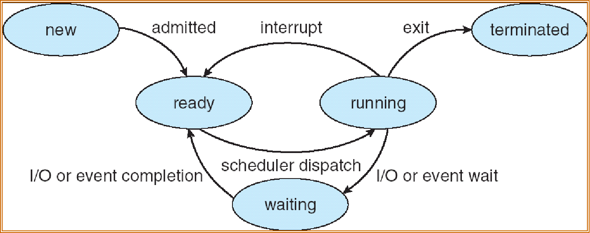
Process control block(PCB)¶
-
OS数据结构，用来跟踪进程和相关资源
-
记录 进程状态、PC、寄存器值、CPU调度、内存管理信息、accounting信息、I/O信息
- Process ID 是进程的独特编号
- PCB中的PC是记录程序目前正在运行的位置
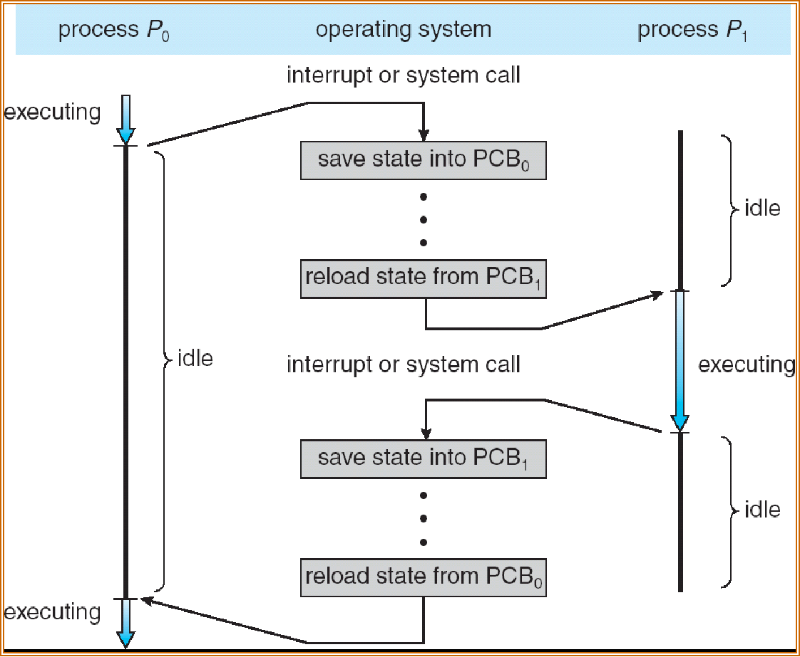
Context Switch上下文切换的overhead
分配设备不需要创建新进程
用户登录成功、启动程序执行需要创建新进程
3.2 进程调度 scheduling¶
Process Scheduling Queues¶
CPU Switch From Process to Process
Job queue – set of all processes in the system（包括ready和正在执行的
Ready queue – set of all processes residing in main memory, ready and waiting to execute（等待CPU
Device queues – set of processes waiting for an I/O device 有很多设备（申请使用device——通过系统调用
Processes migrate among the various queues
[!IMPORTANT]
一个PCB能不能在两个队列（device&ready）里同时排队？- 不可能

[!NOTE]
我们是把PCB放到进程队列里；
CPU有四个核可以有4个队列，也可以只有1个队列
Schedulers 调度器¶
调度器是程序的一部分，A scheduler is a piece of program
Long-term scheduler (or job scheduler) – selects which processes should be brought into memory (the ready queue)
长期调度控制多道程序设计(并发) degree of multiprogramming
Short-term scheduler (or CPU scheduler) – selects which process should be executed next and allocates CPU
- The long-term scheduler is invoked very infrequently (seconds, minutes) => (may be slow)
- The short-term scheduler is invoked very frequently (milliseconds) => (must be fast)
Medium Term Scheduling：进程在内存和磁盘间交换 swap in and out
[!WARNING]
UNIX and Windows do not use long-term scheduling
交换运行程序到磁盘（....？

Processes can be described as either:
-
I/O-bound process I/O绑定进程 – spends more time doing I/O than computations, many short CPU bursts，eg：下载
-
CPU-bound process CPU绑定进程 – spends more time doing computations; few very long CPU bursts，eg：科学计算
Context Switch 上下文切换¶
当CPU切换到另一个进程时，系统必须保存旧进程的状态，并为新进程加载保存的状态
上下文切换的时间是开销 overhead；系统在切换时没有任何有用的工作，通常需要几毫秒
时间取决于硬件支持；在SPARC架构中，提供了寄存器组
- 上下文切换时PCB不必记录进程优先级，优先级是内核kernel判断的
3.3 进程操作¶
Process Creation¶
父进程创造子进程 fork
-
Resource sharing
-
Parent and children share all resources
-
Children share subset of parent’s resources
-
Parent and child share no resources
-
Execution
-
Parent and children execute concurrently
- Parent waits until children terminate
- Address space
- Child duplicate of parent
-
Child has a program loaded into it
-
UNIX examples
- fork system call creates new process
- exec system call used after a fork to replace the process's memory space with a new program
父进程和子进程可以并发执行
父进程和子进程有各自的空间，不共享虚拟地址
父进程和子进程有不同的进程控制块（PCB）-> 隔离
父进程和子进程不能同时使用
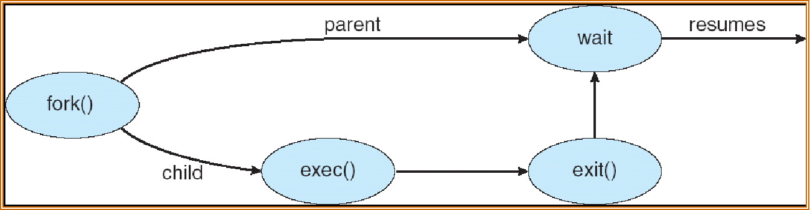
[!NOTE]
子进程可以继承父进程的内容； 需要重置 pid，cpu time，优先级，堆栈
list of open files？？
OS不是真的copy，显式copy
[!CAUTION]
创造进程的新线程不是通过fork
Process Termination¶
3.4 共同协作 cooperating¶
Cooperating Processes¶
Independent process 独立进程 cannot affect or be affected by the execution of another process
Cooperating process can affect or be affected by the execution of another process
Advantages of process cooperation:
- Information sharing
- Computation speed-up (Multiple CPUs)
- Modularity
- Convenience
Producer-consumer¶

主要目的是在生产者线程和消费者线程之间进行数据的同步操作
//Shared data
#define BUFFER_SIZE 10
typedef struct {
. . .
} item;
item buffer[BUFFER_SIZE];
int in = 0;
int out = 0;
//Bounded-Buffer – Insert() Method
//Producer pseudo-code:
while (true) {
Produce an item;
while (((in + 1) % BUFFER_SIZE == out); /* do nothing -- no free buffers */
buffer[in] = item;
in = (in + 1) % BUFFER_SIZE;
}
//Bounded Buffer – Remove() Method
//Consumer pseudo-code:
while (true) {
while (in == out); //do nothing, nothing to consume
Remove an item from the buffer;
item = buffer[out];
out = (out + 1) % BUFFER SIZE;
return item;
}
How many items？
- (in-out) % BUFFER_SIZE
- 或者加一个变量count
3.5 进程间通信¶
Interprocess Communication (IPC)¶
Two models for IPC: message passing消息队列 and shared memory共享内存
通信模型：

共享内存的主要优点：数据一致性
In IPC, minimize shared resources can reduce conflicts
Direct Communication¶
explictly显式的
A link is associated with exactly one pair of communicating processes
Between each pair there exists exactly one link
Indirect Communication¶
mailbox(ports)——both synchronous and asynchronous communication
A link may be associated with many processes
Each pair of processes may share several communication links
Synchronization 同步性¶
send 是一个系统调用
Blocking is considered synchronous
- Blocking send has the sender blocked until the message is received
- Blocking receive has the receiver block until a message is available
Non-blocking is considered asynchronous
- Non-blocking send has the sender send the message and continue
- Non-blocking receive has the receiver receive a valid message or null
3.6 Communication in Client-Server Systems¶
Sockets¶
4 线程 Threads¶
4.1 overview¶
程序内部隔离和调度
Single and Multithreaded Processes¶

cpu调度的最小（基本）单位：线程 thread
资源分配的最小（基本）单位：进程 process
进程和线程的区别¶
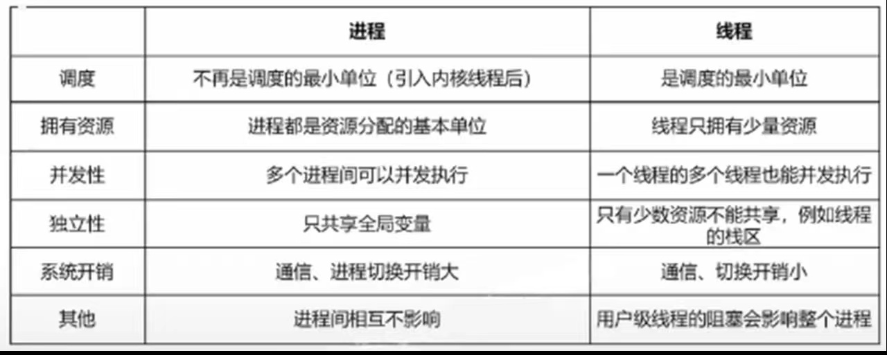
Benfits¶
Responsiveness：interactive applications
Resource Sharing：memory for code and data can be shared.
Economy：creating processes are more expensive.
Utilization of MP Architectures 多处理器架构：multi-threading increases concurrency 可拓展性
User Threads¶
Thread management done by user-level threads library
Three primary thread libraries: POSIX Pthreads (can also be provided as system library) ，Win32 threads， Java threads —— 都可能会产生？？？
一个用户级线程只能映射到一个内核级线程
对于用户级线程，内核并不知情
Kernel Threads¶
Almost all contemporary OS implements kernel threads.
Kernel level threads：支持调度，便于线程切换，避免阻塞；执行的载体
User level threads：；逻辑的载体
内核级线程所需要的资源是以进程为单位申请的
用户级线程的切换通过线程库，不需要内核的支持，即线程库为用户级线程建立一个线程控制块
内核级（系统级）线程的调度由操作系统完成
用户级线程间的切换比内核级切换效率高
用户级线程可以在不支持内核级线程的操作系统上实现
[!NOTE]
多线程的特长：提高并发性，例如矩阵乘法、web服务器响应HTTP
多线程不共享栈指针
同一进程中的各个线程有相同的地址单位
4.2 Multithreading Models¶
Many-to-one Model¶
一个用户级线程卡住了，整个进程就卡住了
thread management is efficient, but will block if making system call, kernel can schedule only one thread at a time

Q：某个分时系统采用多对一线程模型。内存中有10个进程并发运行，其中9个进程中只有一个线程，另外一个进程A拥有11个线程。则A获得的CPU时间占总时间的 1/10
One-to-one¶
Each user-level thread maps to kernel thread
more concurrency, but creating thread is expensive
能让线程并行，每个用户级线程都有一个内核级线程
Q：某个分时系统采用一对一线程模型。内存中有10个进程并发运行，其中9个进程中只有一个线程，另外一个进程A拥有11个线程。则A获得的CPU时间占总时间的 11/20
Many-to-Many Model¶
flexible，LWP ID kernel根据情况看调度
Allows many user level threads to be mapped to many kernel threads
Allows the operating system to create a sufficient number of kernel threads
Two-level Model¶
Similar to M:M, except that it allows a user thread to be bound to kernel thread
4.3 Threading Issues¶
Semantics语义 of fork() and exec(）
Does fork() duplicate only the calling thread or all threads?
Some unix systems have two versions of fork(), one that duplicates all threads and another that duplicates the thread that invokes fork().
Exec() will replace the entire process.
Thread Cancellation¶
Asynchronous cancellation异步 terminates the target thread immediately
Deferred cancellation延后 allows the target thread to periodically check via a flag if it should be cancelled
Signal Handling¶
A signal handler is used to process signals, either synchronous or asynchronous:
- Signal is generated by particular event
- Signal is delivered to a process
- Signal is handled
Thread Pools 线程池¶
Create a number of threads in a pool where they await work
Advantages
- Usually slightly faster to service a request with an existing thread than create a new thread
- Allows the number of threads in the application(s) to be bound to the size of the pool
Thread-Local Storage（TLS）：Allows each thread to have its own copy of data
Scheduler Activations 调度激活¶
LWP is a virtual processor attached to kernel thread
Scheduler activations provide upcalls - a communication mechanism from the kernel to the thread library
Upcalls are handled by the thread library with an upcall handler.
This communication allows an application to maintain the correct number of kernel threads
When an application thread is about to block, an upcall is triggered.
5 调度 CPU Scheduling¶
5.1 Basic concepts¶
scheduler dispatch
调度资源？CPU
调度目标？Processes/threads
Goal: 在multiprogramming下CPU使用率最大化

CPU-I/O Burst Cycle：Process execution consists of a cycle of CPU execution and I/O wait
进程实际运行时CPU占用时间少，I/O多
大部分CPU burst时间非常短
CPU Scheduler¶

nonpreemptive 非抢占式调度 1 & 4
preemptive ✔️ 2 & 3
Dispacher¶
dispacher latency：P1停止运行到P1运行
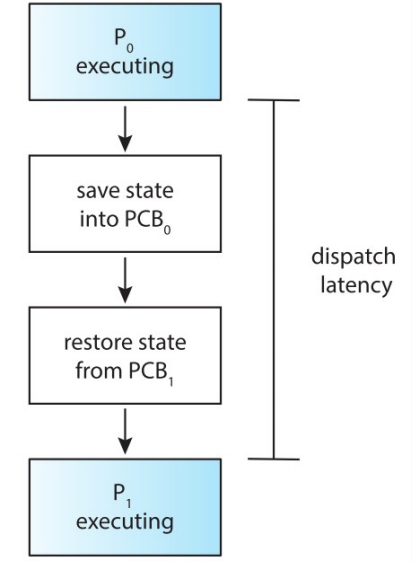
5.2 scheduling criteria¶
CPU utilization CPU利用率：CPU 使用率= (1 - 空闲态运行时间/总运行时间) * 100%
Throughtput 吞吐率：进程数/总执行时间
Turnaround time 周转时间 进程提交到结束
waiting time 等待时间
response time 响应时间
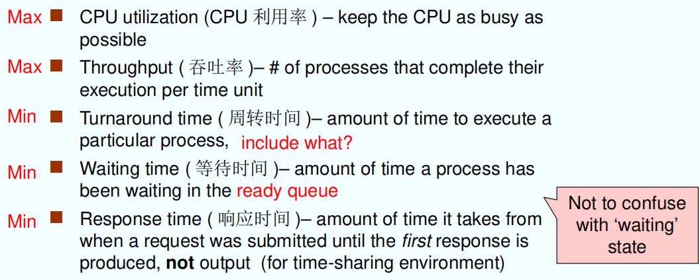
5.3 调度算法 scheduling algorithms¶
FCFS(First-Come, First-Served)¶
先来先服务算法


[!IMPORTANT]
Arrival order makes a difference! 到达顺序很重要
- FCFS是非抢占式算法
- FCFS简单、公平
- Convoy effect（护航效应）: short process behind long process, the average waiting time may be longer, leading to I/O devices & CPU being idle
有利于长作业，不利于短作业；有利于CPU繁忙型，不利于I/O繁忙型
短作业位于长作业后时调度时间要很长；I/O繁忙会有很多waiting，不断排队到ready queue队尾，如果排到长作业后面就要很长时间
SJF(Shortest-Job-First)¶
短作业优先算法
-
SJF is a priority scheduling where priority is the predicted next CPU burst time
-
SJF既可以是抢占式也可以是非抢占式
- nonpreemptive – once CPU given to the process it cannot be preempted until completes its CPU burst
- preemptive – if a new process arrives with CPU burst length less than remaining time of current executing process, preempt. This scheme is known as the Shortest-Remaining-TimeFirst (SRTF)最短剩余时间调度算法
- SJF is optimal – gives minimum average waiting time for a given set of processes
- Which is better? Preemptive? Nonpreemptive? 不确定，要根据到达时间和cpu burst确定
- Starvation 饥饿问题，优先级低的进程一直无法运行，短作业都会发生
- Not good for long process 不适合长进程，因为优先调度cpu burst最短的进程
nonpreemptive¶
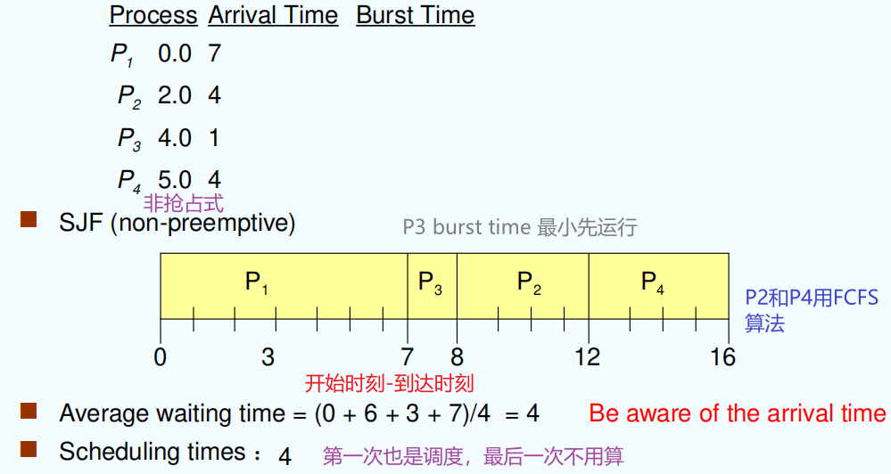
preemptive¶

Priority Scheduling¶
优先级调度算法
The CPU is allocated to the process with the highest priority (smallest integer means highest priority)
-
Preemptive
-
nonpreemptive
Static Priority: determine when processes is created; do not change 静态优先
Problem：Starvation – low priority processes may never execute
Solution：Aging （老化）– as time progresses increase the priority of the process——Dynamic Priority 提高优先级
Highest Response Ratio Next （HRRN）¶
高响应比优先算法
- 非抢占式
- HRRN is a compromise 折中 between FCFS and SJF
- Computing response ratio requires time
- improve the responsiveness of the system 提高系统响应性
Response Ratio （响应比） = \(\frac{\text{cpu burst}+\text{waiting time}}{\text{cpu burst}}\) （等待时间和执行时间都要考虑
Take Response Ratio as priority
Larger Response Ratio, higher priority
HRRN 算法的工作原理¶
-
初始化： 记录每个进程的到达时间和所需的服务时间。
-
计算响应比： 对于每个就绪队列中的进程，计算其响应比。
-
选择最高响应比的进程：
- 选择具有最高响应比的进程执行。
-
如果有多个进程具有相同的最高响应比，则可以按照其他规则（如先到先服务）来选择。
-
更新等待时间和响应比：
- 每次调度后，更新所有就绪队列中进程的等待时间。
- 重新计算所有进程的响应比
Round Robin (RR)¶
时间片轮转算法
- Origin from signature method
- Each process gets a small unit of CPU time (time quantum), usually 10-100 milliseconds. After this time has elapsed, the process is preempted and added to the end of the ready queue. 提高系统交互性
- Application: Time-sharing system, Multi-tasking system
- 当前进程的时间片用完后，该进程的状态由执行态变成就绪态
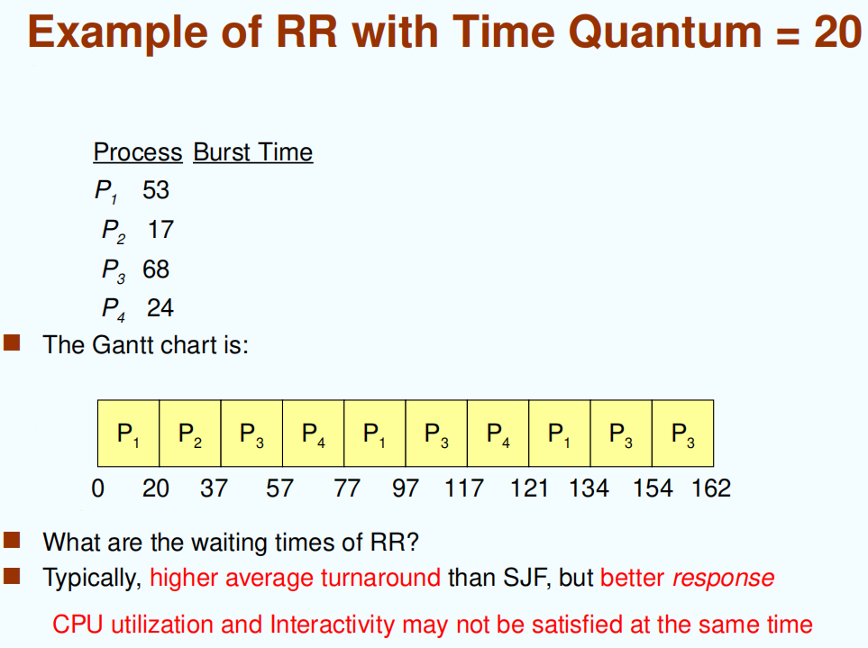

Multilevel Queue¶
多层队列算法
Ready queue is partitioned into separate queues:
- foreground (interactive)
- background (batch)
Each queue has its own scheduling algorithm, for example
- foreground – RR
- background – FCFS 计算密集
Scheduling must be done between the queues
-
Fixed priority scheduling; (i.e., serve all from foreground then from background). Possibility of starvation.
-
Time slice – each queue gets a certain amount of CPU time which it can schedule amongst its processes; i.e., 80% to foreground in RR ， 20% to background in FCFS
Multiple Feedback Queue¶
多级反馈队列
-
多个就绪队列，优先级逐一降低，按照队列优先级调度
-
设置多个就绪队列，优先级从第一级依次降低
-
优先级高的队列，进程时间片越短
-
每个队列都采用 FCFS ，若在该时间片完成，则撒离系统，未完成，转入下一级级队列
-
按队列优先级调度，仅当上一级为空时，才运行下一级
进程进来，先到优先级最高的队列中，时间片内完成则撤离；否则，到下一级队列排队
Multiple-processor scheduling(了解)¶
多处理器调度
Load balancing 负载均衡
Symmetric multiprocessing(SMP) 对称处理器：每个处理器都是自我调度，多个处理器可以运行、更新一个相同的数据结构
Asymmetric multiprocessing 非对称处理器：只有一个处理器可以接触系统数据结构（调度），减轻数据共享，其他处理器只执行用户代码
- 当调度的处理器坏了，整个系统就运行不下去了
Real-time scheduling(了解)¶
实时调度
实时系统一定要在规定时间内完成
Hard real-time systems 硬实时系统：ddl前没运行完有严重后果
Soft real-time systems 软实时系统：可以在ddl前没运行完（eg，腾讯会议
- Earliest ddl First 最早截止时间优先
- Least Laxity First 最低松弛度优先（不怎么用）
- A的松弛度=A必须完成的时间-A需要运行的时间-当前时间
- Rate Monotonic scheduling 速率单调调度
- 基于任务的周期（一个进程多久执行一次）来分配优先级，周期越短任务优先级越高
Thread scheduling(了解)¶
线程调度
Local scheduling 用户级
Global scheduling 内核级
[!NOTE]
批处理 FCFS
分时系统
实时系统
Q¶

外设是不可抢占的
waiting time是进程等待CPU资源的时间！

6 进程同步 Process synchronization¶
[!NOTE]
基本概念：syn，race，critical，four requirements（忙则等待、、、）
软件实现方法：单标志，双标志、、、
硬件实现方法：原理、关中断、Test、Swap、CAS、mutex lock
信号量机制：信号量基本概念（形式、类型、用法、实现、缺点）三个经典问题（有界缓冲区、读写者、哲学家）
管程：基本概念（形式、特点、条件变量）、应用
6.1 背景 background¶
共享数据的并发访问可能导致数据不一致性
Producer-consumer
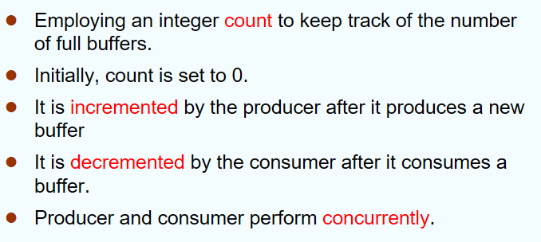
count++和count--两步有可能出错
Race condition 竞态条件¶
出错的example：

出错的原因：抢占式调度，多个进程对shared data进行操作
Race condition 定义：a memory location is accessed concurrently, and at least one access is a write
对于访问共享的内核数据，非抢占式的内核是否受竞态条件的影响？
- 可能会受影响，当多处理器对shared data进行操作
6.2 临界区问题 critical-section problem¶
What operations/processes may have critical problems in OS kernel?
- cpu
- 用户态：一个进程的多个线程（满足shared data和并发执行）
临界资源：多进程或多进程中被共享的资源(shared data)且一次只允许一个进程使用
临界区：程序中一个访问公共资源的程序片段，每个进程中访问临界资源的那段代码被称为临界区
[!NOTE]
以下是临界资源吗？
- 全局共享变量（是），局部变量（不是），只读数据（不是），CPU（不是）
对一个进程，可能存在多个临界区；临界区可以合并（depends）
[!CAUTION]
共享资源才需要互斥
解决方案 solution¶
Mutual Exclusion（互斥/忙则等待）¶
如果进程 Pi 正在其临界区中执行，则其他进程不能在其临界区中执行
Progress（空闲让进）¶
如果没有任何进程在其临界区中执行，并且存在一些希望进入其临界区的进程，则不能无限期地推迟选择下一个将进入临界区的进程（即允许一个请求进入临界区的进程立即进入临界区）
Bounded waiting（有限等待）¶
在一个进程发出进入其临界区的请求之后，在该请求被批准之前，必须对允许其他进程进入其临界区的次数进行限制
- 假设每个进程以非零速度执行
- 没有关于N个进程相对速度的假设
让权等待¶
（原则上应该遵守，但非必须）当进程不能进入临界区时，应立即释放处理器，防止进程忙则等待。
6.3 同步机制¶
软件方法¶
单标志法¶

i和j交替执行
- 满足Mutual Exclusion 和 bounded waiting
- 不满足progess
双标志后检查法¶

- 满足Mutual Exclusion
- 不满足Progress（存在CPU调度的一种情况，两个标志都为TRUE后一直循环下去）
- 如果没有死循环是bounded waiting，但可能有所以总体不是
双标志先检查法¶

和前面两种算法相比，先while再设flag值：

- 不满足Mutual Exclusion（存在CPU调度的一种情况，两个标志都为TRUE，并进入临界区
- 满足Progres
Peterson’s Solution¶
双进程解决方案
假设 LOAD 和 STORE 指令是原子的；即不能被中断。
两个进程共享两个变量：int turn;Boolean flag[2];
变量turn表示轮到谁进入临界区。
flag 数组用于指示进程是否已准备好进入临界区。flag[i] = true 表示进程 Pi 已准备好
基本思想：
//Process Pi
while (true) {
flag[i] = TRUE;
turn = j;
while ( flag[j] && turn == j);
CRITICAL SECTION
flag[i] = FALSE;
REMAINDER SECTION
}
//Process Pj
while (true) {
flag[j] = TRUE;
turn = i;
while ( flag[i] && turn == i);
CRITICAL SECTION
flag[j] = FALSE;
REMAINDER SECTION
}
- 满足mutual exception 和 progress，不会
- 满足bounded waiting，bound是1
[!CAUTION]
There are no guarantees that Peterson's solution works correctly on modern computer architectures.
Reason：计算机编译优化 -> 代码的乱序执行【先load（读），再store（赋值）】
Solution：Memory barrier ( 内存栅栏 ) -- 插入这条指令后就不会乱序执行了
Bakery Algorithm (面包房算法) Lamport¶
Multiple-Process Solutions： for n processes
- 任何时间，最多只能有一个进程进入 critical section ；
- 每个进程最终都会进入 critical section ；
- 每个进程都能停在 noncritical section ；
- 不能对进程的速度做任何假设。
基本思想（排队取号）：
//Multiple-Process Solutions
do{
choosing[i] = true;
number[i] = max{number[0], number[1], …, number[n-1]}+1; // 选号码
choosing[i] = false;
for(j = 0; j ＜ n; j++){
while (choosing[j]);
while ((number[j] != 0) && (number[j], j) ＜ (number[i], i));
};
CRITICAL SECTION
number[i] = 0;
REMAINDER SECTION
} while(1);
- 满足mutual exception 和 progress，
- 满足bounded waiting，bound为 n-1
硬件方法¶
Synchronization Hardware
Modern machines provide special atomic hardware instructions
-> Atomic = non-interruptable (原子操作，不能中断；后三种方法都用了这一思想)
优点
-
适用于任意数目的进程，在单处理器或多处理器上
-
简单，容易验证其正确性
-
可以支持进程内存在多个临界区，只需为每个临界区设立一个布尔变量
缺点
-
耗费 CPU 时间，不能实现“让权等待”
-
可能不满足有限等待：从等待进程中随机选择一个进入临界区，有的进程可能一直选不上
-
可能死锁
关中断法 Disable interrupts(中断屏蔽法)¶
思想：进入临界区前直接屏蔽中断，保证临界区资源顺利使用；使用完毕，打开中断
缺点¶
-
可能影响系统效率：滥用关中断会严重影响 CPU 执行效率，其锁住CPU可能导致原本一些短时间即可完成的需要等待开中断，影响cpu并发执行，cpu利用率下降
-
不适用于多 CPU 系统：中断屏蔽法适用于单 CPU 系统，在多 CPU 系统中无法有效同步各个 CPU 的操作。
- 安全性问题：滥用关中断权力可能导致严重后果，例如在关闭中断期间，一些重要的中断请求可能被错过，影响系统的稳定性和可靠性。
TestAndSet Lock Instruction（TSL）¶
Test and modify the content of a word atomically.
Shared boolean variable lock, initialized to false.
boolean TestAndSet (boolean *target)
{
boolean rv = *target;
*target = TRUE;
return rv:
}
while (true) {
while ( TestAndSet (&lock ));/* do nothing*/
// critical section
lock = FALSE;
// remainder section
};
- 满足mutual exclusion, progress
- 不满足bounded waiting（进入临界区靠运气），不满足让权等待
- 等待进入临界区的进程不会主动放弃CPU
Swap Instruction¶
思想
-
对每个临界资源，swap设置一个全局
bool变量lock(初值为false) ，每个进程设置局部变量key(初值为 true) -
进程调用
swap()指令访问临界区，会交换key和lock的值，实现上锁，进入访问 -
退出时把
lock重置为false
while (true) {
key = TRUE;
while (key = =TRUE)
Swap(&lock, &key) ;
// critical section
lock = FALSE;
// remainder section
}
void Swap(boolean *a, boolean *b)
{
boolean temp = *a;
*a = *b;
*b = temp;
}
- 满足mutual exclusion, progress
- 不满足bounded waiting（
The compare_and_swap (CAS) Instruction¶
思想
- Executed atomically
- Returns the original value of passed parameter value
- Set the variable value the value of the passed parameter new_value but only if
*value == expectedis true. That is, the swap takes place only under this condition.
//Shared integer lock initialized to 0;
while (true){
while (compare_and_swap(&lock, 0, 1) != 0) ; /* do nothing */
/* critical section */
lock = 0;
/* remainder section */
}
int compare_and_swap(int *value, int expected, int new_value)
{
int temp = *value;
if (*value == expected)
*value = new_value;
return temp;
}
- 满足mutual exclusion, progress
- 不满足bounded waiting（
解决办法：排队
Bounded-waiting with compare-and-swap¶
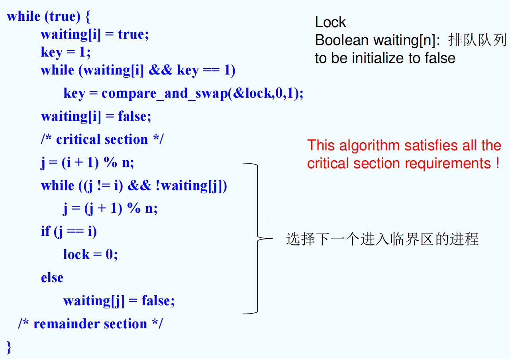
- 满足mutual exclusion, progress和bounded waiting
[!CAUTION]
以上对TS和Swap指令的描述仅为功能描述，它们由硬件逻辑实现，不会被中断
互斥锁 Mutex locks¶

But this solution requires busy waiting （不停空循环）
This lock therefore called a spinlock （也叫 自旋锁）
- 主要采用硬件机制来实现
- 缺点：忙等待
信号量方法 Semaphores¶
用来解决同步和互斥问题
Two indivisible operations modify S:
-
wait()andsignal(), originally calledP()andV() -
Proberen(测试)，Verhogen(增加)
-
只能在wait和signal中对信号量进行操作
-
低级的进程通信原语
Can only be accessed via two indivisible (atomic) operations:
wait (S) { //资源进入临界区
while S <= 0; // no-op，S <= 0：有进程在临界区
S--;
}
signal (S) { //资源退出临界区，空出资源给其他进程
S++;
}
Can be implemented without busy waiting → 实现让权等待
[!IMPORTANT]
S.value=0 已经有一个进程在临界区

信号量种类：

👆互斥访问
同步操作：

Question：有四个房间，四个进程访问
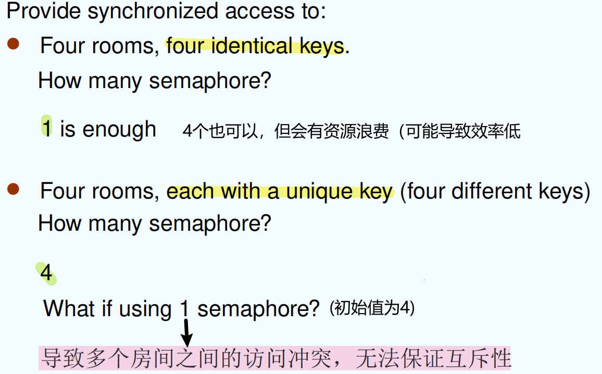
实现 Semaphore Implementation¶
Busy waiting¶


对P不太友好
no Busy waiting 非忙等¶

/*Implementation of wait*/
wait (S){ //取信号量操作
value--;
if (value < 0) {
// add this process to waiting queue
block(); // 插到S的waiting queue中
}
}
/*Implementation of signal*/
Signal (S){
value++;
if (value <= 0) {
// remove a process P from the waiting queue
wakeup(P); // 把一个进程唤醒，移出waiting queue，到临界区执行
}
}
- S的取值可以是负的了（相比原先的wait和signal），S取负表示当前队列排队进程的个数


[!WARNING]
进程在标黄处sleep后，再次被唤醒时会从头开始执行！
Busy waiting? No busy waiting?
- No busy waiting
What if one must choose busy waiting?
- 电脑要多CPU
- 上下文切换时间 > busy waiting，选择no busy waiting；<的话两者都行
Deadlock and Starvation¶
Deadlock 死锁 – two or more processes are waiting indefinitely for an event that can be caused by only one of the waiting processes
Starvation 饥饿 – indefinite blocking. A process may never be removed from the semaphore queue in which it is suspended
Classical Problems of Synchronization¶
Bounded-Buffer Problem¶
N buffers, each can hold one item
- Semaphore mutex initialized to the value 1 互斥信号量1个
- Semaphore full initialized to the value 0, counting full items
- Semaphore empty initialized to the value N, counting empty items

Readers and Writers Problem¶
A data set is shared among a number of concurrent processes
- Readers – only read the data set; they do not perform any updates
- Writers – can both read and write.
Problem – allow multiple readers to read at the same time. Only one single writer can access the shared data at the same time. ( 读者优先 )
Shared Data
-
Data set
-
Semaphore mutex initialized to 1, to ensure mutual exclusion when readcount is updated.
-
Semaphore wrt initialized to 1.
-
Integer readcount initialized to 0 读者的数量

Dining-Philosophers Problem¶
哲学家就餐问题
Shared data
-
Bowl of rice (data set)
-
Semaphore
chopstick [5]initialized to 1

如果只设置一个筷子的信号量，设置为5，有什么问题？一个筷子可能被拿两次，违反互斥性
管程方法¶
实现互斥和同步
Monitor¶
A high-level abstraction that provides a convenient and effective mechanism for process synchronization.
Only one process may be active within the monitor at a time. (hint: the other processes may be sleeping within the monitor)
//管程变量只有内部函数可以访问
monitor monitor-name
{
// shared variable declarations
procedure P1 (…) { …. }
…
procedure Pn (…) {……}
Initialization code ( ….) { … }
…
}
 函数挂起
函数挂起
x.wait()阻塞该进程并将他插入到x序列
管程方法解决哲学家就餐问题¶
monitor DP
{
enum { THINKING; HUNGRY, EATING) state [5] ;
condition self [5];
//philosopher i can delay herself when unable to get chopsticks
void pickup (int i) { // 拿筷子
state[i] = HUNGRY;
test(i); // 看看左边右边有没有人在eating
if (state[i] != EATING) // 自己hungry
self[i].wait; // 筷子还不可用，等待
}
void putdown (int i) {
state[i] = THINKING;
// test left and right neighbors
test((i + 4) % 5); // 如若满足则唤醒进行吃饭
test((i + 1) % 5);
}
void test (int i) {
if ( (state[(i + 4) % 5] != EATING) &&
(state[i] == HUNGRY) &&
(state[(i + 1) % 5] != EATING) ) {
state[i] = EATING ;
self[i].signal() ; //执行时不在signal中等待，这句signal没有用
} }
initialization_code() {
for (int i = 0; i < 5; i++)
state[i] = THINKING;
} }
- When the left and right philosophers, self[(i+4)%5] and self[(i+1)%5]
continue to eat, self[i] may starve
例子¶
Pthreads¶
It provides:
-
mutex locks
-
condition variables
Non-portable extensions include:
-
read-write locks
-
spin locks
Using pthread_cond_wait() & pthread_cond_signal()
题目¶
1.
7 死锁 Deadlock¶
7.1 The Deadlock Problem¶
死锁：多个进程因竞争共享资源而造成相互等待的一种僵局，使得各个进程都被阻塞，若无外
力作用，这些进程都将永远不能再向前推进
产生死锁的四个必要条件¶

7.2 系统模型 System Model¶
resource type & resource instances
资源分配图 Resource-Allocation Graph¶
A set of vertices顶点 V and a set of edges边 E

顶点表示资源R或进程P
边：P->R 等待资源; R->P 可以使用资源（资源R已经被P占用）
死锁一定有环，有环不一定死锁
If graph contains no cycles => no deadlock. 无环一定没有死锁
If graph contains a cycle =>
-
if only one instance per resource type, then deadlock.
-
if several instances per resource type, possibility of deadlock.
7.3 死锁处理方法 Methods for Handling Deadlocks¶
Ensure that the system will never enter a deadlock state. 让系统永远不进入死锁状态 ---- Prevention 死锁预防、 Avoidance 死锁避免
Allow the system to enter a deadlock state and then recover. 允许系统进入死锁状态，但可以恢复 ----Detection 死锁检测、 Recovery 死锁解除
Ignore the problem and pretend that deadlocks never occur in the system. 忽略，假装不出现死锁 ---- 鸵鸟算法
- 鸵鸟算法 is used by most operating systems, including UNIX、Linux、Windows. 为什么选这个？用户运行多，解决代价少
Deadlock Prevention (预防)¶
破坏死锁产生的四个必要条件之一
Restrain the ways request can be made.
- Prevent Mutual Exclusion 不互斥 – not required for sharable resources; must hold for nonsharable resources 不共享资源，实际中不太可行
- Prevent Hold and Wait 不请求等待 - must guarantee that whenever a process requests a resource, it does not hold any other resources.
- Require process to request and be allocated all its resources before it begins execution, or allow process to request resources only when the process has none (release all current resources before requesting any additional ones).
-
Low resource utilization; starvation possible. (example: copy data from DVD drive to a disk file, sorts the file, then prints the results to a printer.)
-
Prevent No Preemption 可剥夺 – 变成非抢占式，实际中不太可行
- Prevent Circular Wait 不循环等待 – impose a total ordering of all resource types, and require that each process requests resources in an increasing order of enumeration.
以上方法在实际中都不太可行
Deadlock Avoidance (避免)¶
通过动态检测资源分配的安全性，确保系统不会进入不安全状态
- 为实现安全性，我们需要知道
- each process declares the maximum number of resources of each type that it may need
- The deadlock-avoidance algorithm dynamically examines the resource-allocation state to ensure that there can never be a circular-wait condition.
- Resource-allocation state is defined by the number of available and allocated resources, and the maximum demands of the processes.
safe state¶
对于进程序列中的每一个进程Pi，当前系统已经分配了一些资源，还剩下一些资源。如果 Pi前面的资源之和+系统剩下的资源 能够满足Pi执行完毕，则这个序列是个安全状态。

[!NOTE]
If a system is in safe state => no deadlocks. 安全状态一定无死锁
If a system is in unsafe state => possibility of deadlock. 不安全可能有死锁
Avoidance => ensure that a system will never enter an unsafe state.

Avoidance algorithms¶
Single instance of a resource type. Use a resourceallocation graph
Multiple instances of a resource type. Use the banker’s algorithm
Resource-Allocation Graph Algorithm 资源分配图算法¶
Claim edge Pi -> Rj indicated that process Pi may request resource Rj
有三种边：claim edge、request edge 和 assignment edge
？
Banker’s Algorithm 银行家算法 ¶
¶

数据结构

Example


Safety Algorithm¶

Deadlock Detection ( 检测 )¶
本质：safety 算法，全部满足就没有死锁
Single Instance of Each Resource Type¶
检查wait for graph有没有环

Several Instances of a Resource Type¶
调用safety算法
时间复杂度：O(m × n^2^)
Completely Reducible Graph 可完全化简图¶
能消去图中所有边，能则称为可完全化简图
找出一个既不阻塞又非独立的进程结点 Pi
在顺利的情况下，分配给其资源让其完成，消去所有边变成孤立点
循环上述两步操作，直至消去所有边，代表无死锁。
7.7 Recovery from Deadlock¶
资源剥夺法：把部分进程挂起，剥夺其资源
撤销进程法：撤销部分进程，释放资源
进程回退法：让一个进程或多个进程回退到避免死锁的地步，释放中间资源
依据：进程的优先级、已执行时间、剩余时间、已用资源、交互还是批处理等
Resource Preemption¶
Selecting a victim – minimize cost. Rollback – return to some safe state, restart process for that state. Starvation – same process may always be picked as victim, include number of rollback in cost factor
评论区~
有用的话请给我个赞和 star =>